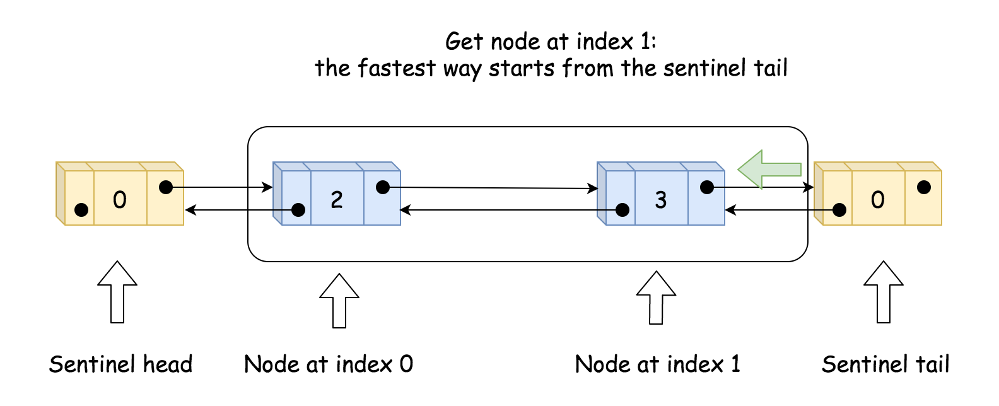

# 删除指定下标的节点 defdeleteAtIndex(self, index: int) -> None: if index < 0or index >= self.size: return
self.size -= 1# 更新链表长度 pred = self.head
for _ inrange(index): # 定位到要删除节点的前驱节点 pred = pred.next pred.next = pred.next.next
# Your MyLinkedList object will be instantiated and called as such: # obj = MyLinkedList() # param_1 = obj.get(index) # obj.addAtHead(val) # obj.addAtTail(val) # obj.addAtIndex(index,val) # obj.deleteAtIndex(index)
/** * Your MyLinkedList object will be instantiated and called as such: * MyLinkedList* obj = new MyLinkedList(); * int param_1 = obj->get(index); * obj->addAtHead(val); * obj->addAtTail(val); * obj->addAtIndex(index,val); * obj->deleteAtIndex(index); */
3.解法2 双向链表
实现双向链表，即每个节点要存储本身的值，后继节点和前驱节点。除此之外，需要一个哨兵节点作为头节点 head 和一个哨兵节点作为尾节点 tail。仍需要一个 size 参数保存有效节点数。如下图所示。
初始化时，只需创建头节点 head 和 size 即可。
实现 get(index) 时，先判断有效性，然后再比较从 head 还是 tail 来遍历会比较快找到目标，然后进行遍历。如下图所示。

实现 addAtIndex(index, val) 时，如果 index 是有效值，则需要找到原来下标为 index 的节点 succ 和前驱节点 pred，并创建新节点 to_add，再通过各自 prev 和 next 变量的更新来增加 to_add。最后需要更新 size。如以下两张图所示。
# 删除指定下标的节点 defdeleteAtIndex(self, index: int) -> None: if index < 0or index >= self.size: return if index < self.size - index: pred = self.head for _ inrange(index): pred = pred.next succ = pred.next.next else: succ = self.tail for _ inrange(self.size - index - 1): succ = succ.prev pred = succ.prev.prev
self.size -= 1 pred.next = succ succ.prev = pred
# Your MyLinkedList object will be instantiated and called as such: # obj = MyLinkedList() # param_1 = obj.get(index) # obj.addAtHead(val) # obj.addAtTail(val) # obj.addAtIndex(index,val) # obj.deleteAtIndex(index)
voiddeleteAtIndex(int index){ if (index < 0 || index >= size){ return; } DLinkListNode *pred, *succ; if (index < size - index) { pred = head; for (int i=0; i<index; i++){ pred = pred->next; } succ = pred->next->next; } else { succ = tail; for (int i=0; i < size - index - 1; i++) { succ = succ->prev; } pred = succ->prev->prev; } size--; DLinkListNode *p = pred->next; pred->next = succ; succ->prev = pred; delete p; } private: int size; DLinkListNode *head; DLinkListNode *tail; };
/** * Your MyLinkedList object will be instantiated and called as such: * MyLinkedList* obj = new MyLinkedList(); * int param_1 = obj->get(index); * obj->addAtHead(val); * obj->addAtTail(val); * obj->addAtIndex(index,val); * obj->deleteAtIndex(index); */